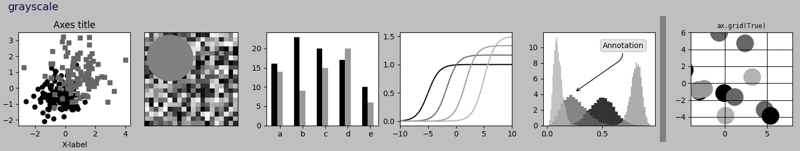

Note
Go to the end to download the full example code
Style sheets reference#
This script demonstrates the different available style sheets on a common set of example plots: scatter plot, image, bar graph, patches, line plot and histogram.
Any of these style sheets can be imported (i.e. activated) by its name. For example for the ggplot style:
>>> plt.style.use('ggplot')
The names of the available style sheets can be found
in the list matplotlib.style.available
(they are also printed in the corner of each plot below).
See more details in Customizing Matplotlib using style sheets.
- 


import matplotlib.pyplot as plt
import numpy as np
import matplotlib.colors as mcolors
from matplotlib.patches import Rectangle
# Fixing random state for reproducibility
np.random.seed(19680801)
def plot_scatter(ax, prng, nb_samples=100):
"""Scatter plot."""
for mu, sigma, marker in [(-.5, 0.75, 'o'), (0.75, 1., 's')]:
x, y = prng.normal(loc=mu, scale=sigma, size=(2, nb_samples))
ax.plot(x, y, ls='none', marker=marker)
ax.set_xlabel('X-label')
ax.set_title('Axes title')
return ax
def plot_colored_lines(ax):
"""Plot lines with colors following the style color cycle."""
t = np.linspace(-10, 10, 100)
def sigmoid(t, t0):
return 1 / (1 + np.exp(-(t - t0)))
nb_colors = len(plt.rcParams['axes.prop_cycle'])
shifts = np.linspace(-5, 5, nb_colors)
amplitudes = np.linspace(1, 1.5, nb_colors)
for t0, a in zip(shifts, amplitudes):
ax.plot(t, a * sigmoid(t, t0), '-')
ax.set_xlim(-10, 10)
return ax
def plot_bar_graphs(ax, prng, min_value=5, max_value=25, nb_samples=5):
"""Plot two bar graphs side by side, with letters as x-tick labels."""
x = np.arange(nb_samples)
ya, yb = prng.randint(min_value, max_value, size=(2, nb_samples))
width = 0.25
ax.bar(x, ya, width)
ax.bar(x + width, yb, width, color='C2')
ax.set_xticks(x + width, labels=['a', 'b', 'c', 'd', 'e'])
return ax
def plot_colored_circles(ax, prng, nb_samples=15):
"""
Plot circle patches.
NB: draws a fixed amount of samples, rather than using the length of
the color cycle, because different styles may have different numbers
of colors.
"""
for sty_dict, j in zip(plt.rcParams['axes.prop_cycle'](),
range(nb_samples)):
ax.add_patch(plt.Circle(prng.normal(scale=3, size=2),
radius=1.0, color=sty_dict['color']))
ax.grid(visible=True)
# Add title for enabling grid
plt.title('ax.grid(True)', family='monospace', fontsize='small')
ax.set_xlim([-4, 8])
ax.set_ylim([-5, 6])
ax.set_aspect('equal', adjustable='box') # to plot circles as circles
return ax
def plot_image_and_patch(ax, prng, size=(20, 20)):
"""Plot an image with random values and superimpose a circular patch."""
values = prng.random_sample(size=size)
ax.imshow(values, interpolation='none')
c = plt.Circle((5, 5), radius=5, label='patch')
ax.add_patch(c)
# Remove ticks
ax.set_xticks([])
ax.set_yticks([])
def plot_histograms(ax, prng, nb_samples=10000):
"""Plot 4 histograms and a text annotation."""
params = ((10, 10), (4, 12), (50, 12), (6, 55))
for a, b in params:
values = prng.beta(a, b, size=nb_samples)
ax.hist(values, histtype="stepfilled", bins=30,
alpha=0.8, density=True)
# Add a small annotation.
ax.annotate('Annotation', xy=(0.25, 4.25),
xytext=(0.9, 0.9), textcoords=ax.transAxes,
va="top", ha="right",
bbox=dict(boxstyle="round", alpha=0.2),
arrowprops=dict(
arrowstyle="->",
connectionstyle="angle,angleA=-95,angleB=35,rad=10"),
)
return ax
def plot_figure(style_label=""):
"""Setup and plot the demonstration figure with a given style."""
# Use a dedicated RandomState instance to draw the same "random" values
# across the different figures.
prng = np.random.RandomState(96917002)
fig, axs = plt.subplots(ncols=6, nrows=1, num=style_label,
figsize=(14.8, 2.8), layout='constrained')
# make a suptitle, in the same style for all subfigures,
# except those with dark backgrounds, which get a lighter color:
background_color = mcolors.rgb_to_hsv(
mcolors.to_rgb(plt.rcParams['figure.facecolor']))[2]
if background_color < 0.5:
title_color = [0.8, 0.8, 1]
else:
title_color = np.array([19, 6, 84]) / 256
fig.suptitle(style_label, x=0.01, ha='left', color=title_color,
fontsize=14, fontfamily='DejaVu Sans', fontweight='normal')
plot_scatter(axs[0], prng)
plot_image_and_patch(axs[1], prng)
plot_bar_graphs(axs[2], prng)
plot_colored_lines(axs[3])
plot_histograms(axs[4], prng)
plot_colored_circles(axs[5], prng)
# add divider
rec = Rectangle((1 + 0.025, -2), 0.05, 16,
clip_on=False, color='gray')
axs[4].add_artist(rec)
if __name__ == "__main__":
# Set up a list of all available styles, in alphabetical order but
# the `default` and `classic` ones, which will be forced resp. in
# first and second position.
# styles with leading underscores are for internal use such as testing
# and plot types gallery. These are excluded here.
style_list = ['default', 'classic'] + sorted(
style for style in plt.style.available
if style != 'classic' and not style.startswith('_'))
# Plot a demonstration figure for every available style sheet.
for style_label in style_list:
with plt.rc_context({"figure.max_open_warning": len(style_list)}):
with plt.style.context(style_label):
plot_figure(style_label=style_label)
plt.show()
Total running time of the script: (0 minutes 16.288 seconds)